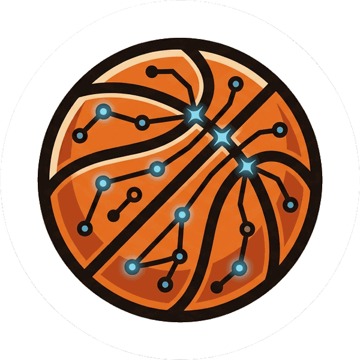

Your basketball knowledge is your jumpshot.
Turn-based hoops strategy — chess brain, trivia range, timing hands.
Pick a squad from the NBA and the WNBA. Rarity is how many superstars you land.
Know the answer, take the shot. Corners pay three. Miss and it's a turnover.
String them together and you catch fire — then the special moves unlock.
Built one question at a time. Every card in the game has been read against its source by a human before it can be asked.